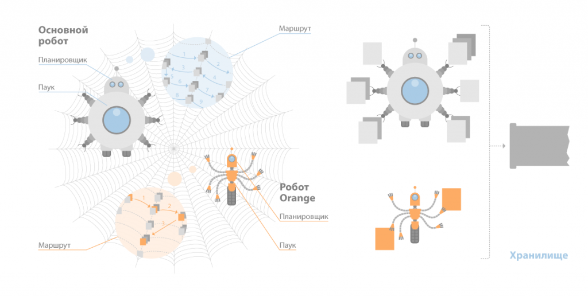
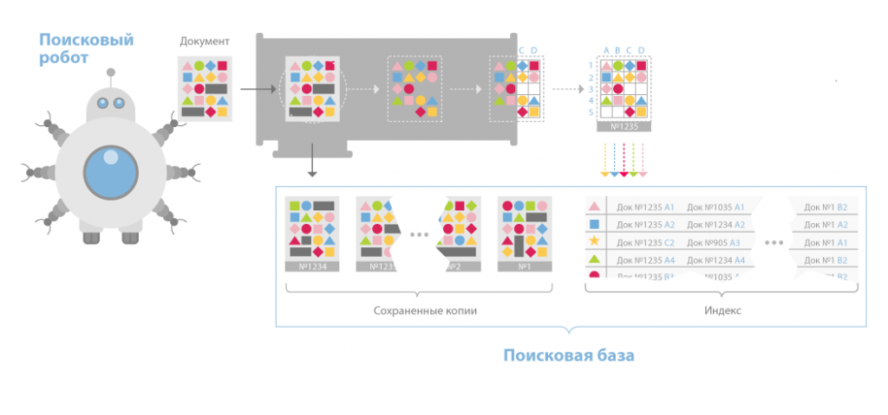

В России главной системой поиска является Яндекс, затем Google, а потом Поиск@Mail.ru. Все большие системы поиска имеют свою структуру, которая весьма отличается от других. Но все-таки можно выделить общие для всех поисковиков основные элементы.
Данный компонент состоит из трех программ-роботов:
Spider (по англ. паук) – программа которая предназначена для того чтобы скачивать веб-страницы. «Паук» скачивает определенную страницу, одновременно извлекая из нее все ссылки. Скачивается код html практически с каждой страницы. Для этого роботы используют HTTP-протоколы.
«Паук» функционирует следующим образом. Робот передает запрос на сервер “get/path/document” и иные команды запроса HTTP. В ответ программа-робот получает поток текста, который содержит информацию служебного вида и, естественно, сам документ.
Извлекаются все ссылки из тэгов. Вместе с ними обрабатывают редиректы. Любая скачанная страница сохраняется в таком формате:
Crawler («путешествующий» паук). Данная программа автоматически заходит на все ссылки, которые найдены на странице, а также выделяет их. Его задача – определиться, куда в дальнейшем должен заходить паук, основываясь на этих ссылках или исходя из заданного списка адресов.
Crawler, исследуя найденные ссылки, ищет новые документы, еще не ставшие известными поисковой системе.
Indexer (робот-индексатор) – это программа, анализирующая страницы, которые скачали пауки.
Индексатор полностью разбирает страницу на составные элементы и проводит их анализ, применяя свои морфологические и лексические виды алгоритмов.
Анализ проводится над разнообразными частями страницы, такими как заголовки, текст, ссылки, стилевые и структурные особенности, теги html и др.
Таким образом, модуль индексирования дает возможность проходить по ссылкам заданного количества ресурсов, скачивать страницы, извлекать ссылочную массу на новые страницы из полученных документов и делать подробный их анализ.
База данных (или индекс поисковика) - комплекс хранения данных, массив информации в котором сохраняются определенным образом переделанные параметры каждого обработанного модулем индексации и скачанного документа.
Это самый важный элемент всей системы, потому что от алгоритмов, лежащих в основе ее функциональности, прямо зависит скорость и, конечно же, качество поиска.
Поисковый сервер работает следующим образом:
Все эти элементы тесно связаны между собой и функционируют, взаимодействуя, образовывая отчетливый, но достаточно непростой механизм функционирования ПС, требующий громадных затрат ресурсов.